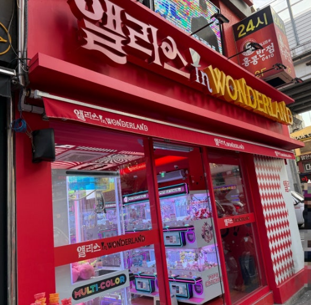
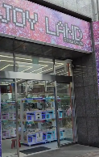

Shop Tour
윈도우 환경에서도 잘 보이는 뽑기 명소 리스트

앨리스 인 원더랜드 건대점
#잘뽑히는곳 #탑쌓기성지
건대 입구 근처에서 손맛 보기 가장 좋은 곳. 집게 힘이 다른 곳보다 훨씬 정직하게 들어가며, 입구 주변에 인형이 풍성하게 몰려있어 '탑 쌓아서 밀기' 노하우를 발휘하기에 최고의 난이도를 지녔다.

조이랜드 dmc점
#자주가는곳 #퇴근길참새방앗간
공부하거나 일을 마친 뒤 귀가길에 무조건 자석처럼 끌려 들어가는 단골 매장. 신상 인형 라인업 회전 속도가 무척 빨라 단순히 아이쇼핑만 해도 힐링이 되며, 가끔 500원 통에서 극상의 잭팟이 터지곤 한다.